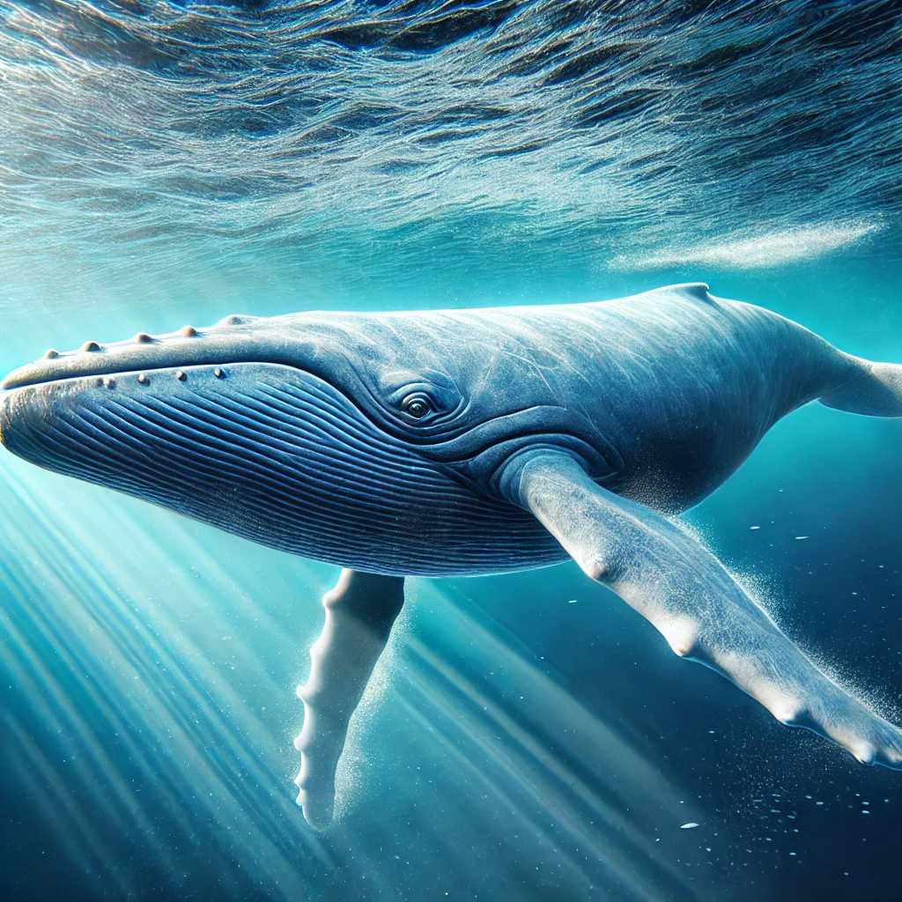

Whales are magnificent marine mammals that belong to the order Cetacea. They are known for their incredible size, intelligence, and importance to the marine ecosystem. There are two main types of whales: baleen whales and toothed whales.
Baleen whales filter feed on small organisms such as krill and plankton using their baleen plates. Examples include:

Blue Whales
Toothed whales are predators that hunt fish, squid, and other marine animals using echolocation. Examples include:
Whales play a crucial role in the health of marine ecosystems by maintaining balance in the food web and contributing to the carbon cycle.
Back to Information Page